Game Design Portfolio – Alexandr Detushev
+382-68-541-158 · Sashadetush@gmail.com · LinkedIn · Resume
Project: Warspear Online ↗ · Google Play ↗ · App Store ↗
🔥 About me
For the past six years I have been working on Warspear Online as a Lead Game Designer. I own class design, endgame systems, talent progression, and live balance across a 20-class roster. My work sits at the intersection of combat systems, long-term progression, and player economy — in a game where players invest heavily and design decisions carry real weight.
I lead a small design team of 3 while staying hands-on with system design, encounter design, and feature delivery. Before moving into a lead role, I spent several years as a senior designer shipping new classes, rebuilding the talent system, and designing seasonal content.
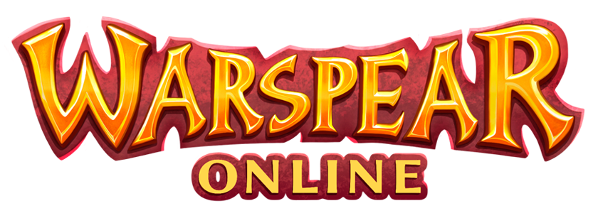
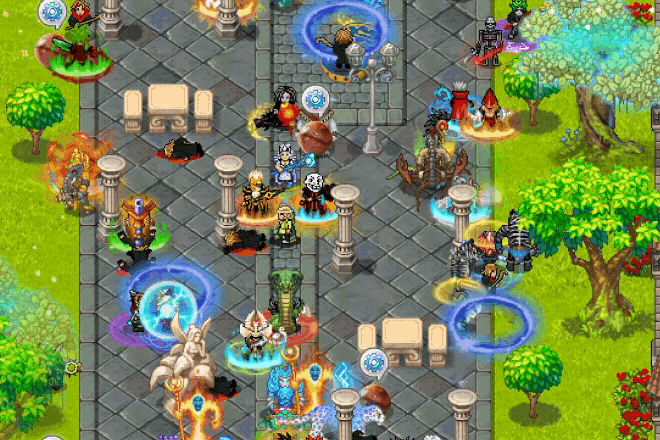
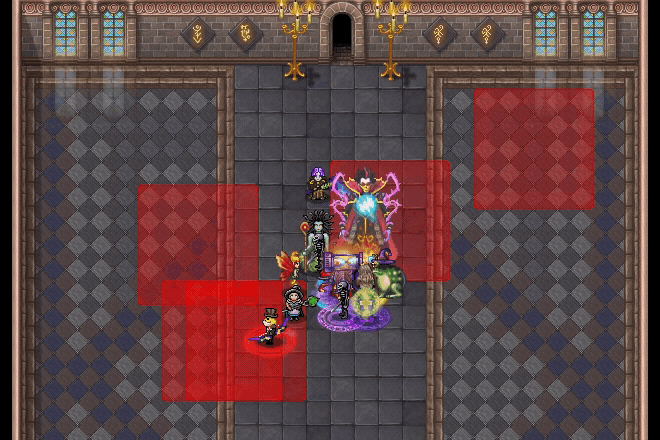
Warspear Online is a retro-style cross-platform MMORPG that has been running for over 15 years — one of the earliest mobile MMOs. The game features:
- Four factions and two opposing alliances with large-scale PvP
- 20 unique classes, each with distinct abilities and playstyles
- A vast open world with multiple continents, dungeons, and cities
- Deep guild systems with PvE raids and competitive guild wars
- Dynamic seasonal events and frequent content updates
- A rich economy with crafting, trading, and an in-game marketplace
Quick Overview
At a Glance
Lead Game Designer on Warspear Online with 6+ years in live MMORPG development. I design class systems, endgame content, and long-term progression for a game where balance changes affect real player investment.
Core Work
- Playable classes and live balance across a 20-class roster
- Endgame systems for organized guilds, including competitive raids with seasonal leaderboards
- Long-term progression through talent trees and guild talent systems
- Daily engagement loops tied to seasonal content, non-combat guilds, and repeatable activities
Highlights
- Designed and shipped 4 new playable classes: Templar, Chieftain, Beastmaster, Reaper — each filling a missing archetype and creating new itemization demand
- Built competitive guild raids with 15 difficulty tiers, seasonal showdowns, and leaderboard-driven competition
- Rebuilt the talent system into a long-term progression pillar with per-class trees and talents that modify skill behavior
- Designed three non-combat guild systems combining daily loops with guild-specific buildcrafting
Contents
Case Studies (Summary)
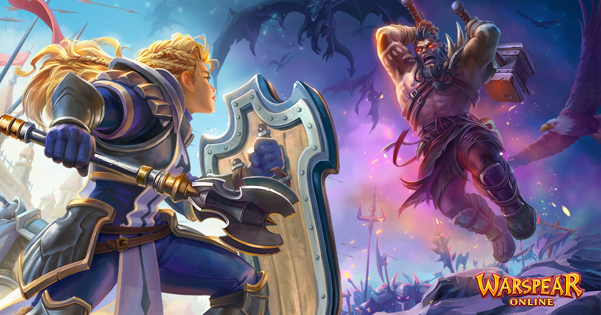
Playable Classes
I designed and shipped four new playable classes for Warspear Online. Each class was built to fill a missing archetype, open new itemization paths, and give both new and existing players a reason to invest into a different character. In a progression-heavy game, new classes also affect economy and player trust — fresh gear demand has to coexist with the value players already built.
Quick overview
- Templar — a hybrid tank/support with strong control tools, built to close a gap in the Sentinels' faction toolkit. High skill ceiling with endgame group value.
- Chieftain — a fast, solo-friendly class with strong QoL. One of the most popular classes in the game. Uses dual one-handed magical maces, which created demand for that weapon path.
- Beastmaster — a solo-friendly class built around a permanent combat companion. One of the best entry points for new players. Uses a two-handed spear, creating clear upgrade pressure.
- Reaper — a transformation-based class where skills change properties in form. Strong PvP identity built around power windows and resource management. Required new UI elements.
Competitive Guild Raids
Competitive Guild Raids became one of the main endgame pillars for high-level guilds. The system combines repeatable PvE, leaderboard pressure, and staged difficulty scaling to give organized groups a long-term competitive target with real seasonal momentum.
Key points
- Seasonal raid showdowns tied to major game events
- Rotating raid encounters that also run outside seasonal structure
- Up to 15 difficulty tiers with staged mechanic escalation
- Rare power rewards, large gold payouts, and visible leaderboard competition
My role
Designed the raid system, all encounters, difficulty scaling, and reward structure. Another designer handled the raid scheduling and entry UI.
Why it matters
- Creates a real long-term PvE target for top guilds beyond gear farming
- Strong economy sink through consumable and preparation item demand
- Drives cross-mode engagement because many raid resources are earned in other systems
Talents and Long-term Progression
I rebuilt the talent system to turn progression into a stronger long-term loop and to give players more meaningful build choices. Before the rework, most classes had one or two obvious builds. The new structure created real differentiation, connected progression to multiple daily activities, and gave events, battle pass, and guild systems a shared progression anchor.
Key points
- Talents are per character and per class, with separate guild-related talent trees
- Progression is spread across multiple activity types, each with its own daily cap
- Build switching is supported but costs resources — flexibility with weight
- Event talent trees refresh seasonally; class trees evolve over longer balance cycles
- Later talents modify skill behavior directly, not just stats
Why it matters
- Build diversity across the roster became real, not theoretical
- Daily engagement increased because no single grind path is optimal
- Talent trees became a connective layer between seasonal content, guilds, and core class progression
Non-Combat Guilds
Non-Combat Guilds are daily progression systems that extend buildcrafting through guild talent trees. Each guild has its own activity loop and thematic identity, but all follow the same principle: daily caps create regular return reasons, and guild talents add long-term character value that connects to class builds.
Guilds at a glance
- Adventurers — PvE loop built around searching for and activating procedural mini-dungeons in the open world
- Assassins — PvP loop with contested progress collection and a personal boss encounter as payoff
- Mages — hybrid loop starting with an open-world escort phase and ending in a wave-based tower encounter
Why it matters
- Adds daily retention without relying on a single content type
- Guild talents create a second buildcrafting layer with class-specific effects
- Social access lets players benefit from other guild paths through cooperation
Live Balance Approach
In Warspear Online, balance is not only a gameplay problem — it is a trust problem. Players invest heavily into characters over time, so major changes can feel like lost value. My goal is to keep the meta moving without making players feel punished for past investment.
How I approach balance
- Avoid large direct nerfs when possible — strengthen alternatives so players have a positive direction to move into
- Sometimes change how an overperforming class plays rather than only cutting raw numbers
- Time changes around community readiness — shifts land better when players already understand the problem
- Treat balance as a long-term arc, not a patch-to-patch reaction
Signals I track
- Forum and Discord sentiment
- Class activity and popularity trends
- Monetization patterns, especially around new classes and major reworks
Catacombs
Catacombs is a timed group PvPvE dungeon built around extraction-style reward logic. Players earn loot through PvE objectives, but that loot is not safe — dying drops part of it for others to claim. To keep rewards, players must extract before the timer ends. The mode combines PvE progression, PvP pressure, and risk management in a single session.
Why it matters
- Turns survival and exit timing into part of the reward structure
- Creates tension through loot loss, contested space, and extraction decisions
- Adds a modern session-based format on top of a classic MMORPG foundation
Classes
- Update 9.0 Preview — introduces new classes incl. Templar & Chieftain
- Update 9.0 Release
- Update 11.0 Preview — introduces Beastmaster & Reaper
- Update 11.0 Release
Competitive Guild Raids
Talents / Balance
Deep Dives (Details)
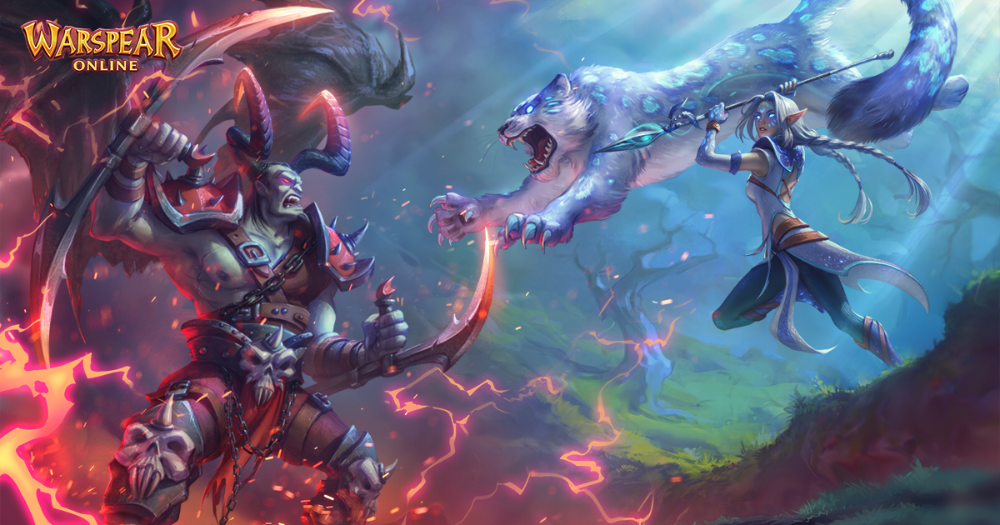
This section goes deeper into design decisions, development challenges, and why specific choices mattered.
The Summary section above is meant for a fast read. The blocks below are for people who want more detail on class design, endgame systems, long-term progression, and supporting loops.
Playable Classes
These four classes were designed to fill missing archetypes, expand itemization paths, and create new long-term character choices.
In the deep dives below I focus on design intent, the hardest development problems, and the impact on player behaviour, economy, and role coverage.
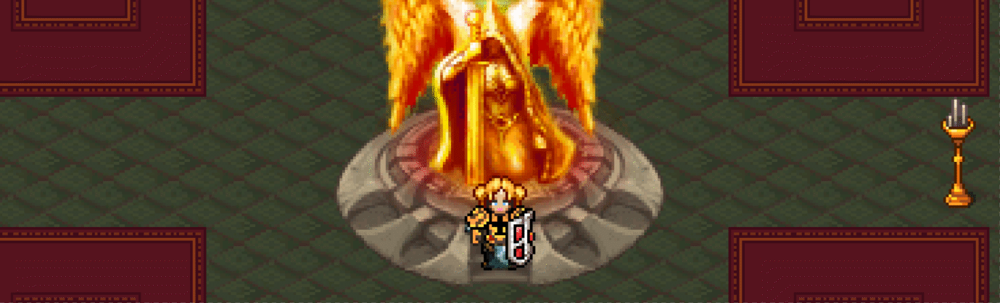
Templar was designed to close a missing control gap for the Sentinels. The concept was a monk-knight hybrid that supports allies and controls enemies. The main goal: help Sentinels catch up with Legion in control tools while creating a class that rewards mastery and tactical play.
Templar is a hybrid tank/support with a high skill ceiling. Good timing and positioning matter — the kit rewards players who enjoy coordinated group play and endgame content. It is not a comfort pick for beginners.
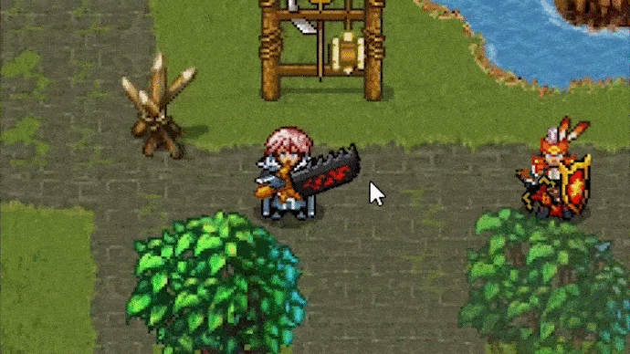
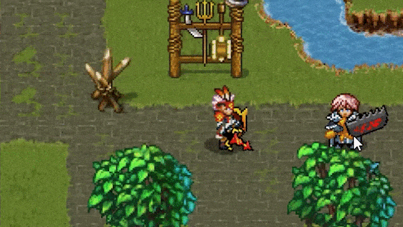
A key part of the design was flexibility without losing identity. Templar can wear heavy armor or cloth, and can use either mace + shield or a staff. This was intentional. It lets players build into a frontline controller or a more support-oriented caster style while still staying inside the same core fantasy.
The control kit was built around creating windows, not permanent lockdown. I wanted strong tools that still feel fair. For example, Reverse Flow creates an area that pushes enemies away and can stun them, which enables space control rather than simple "hard CC spam". Touch of Truth creates a moment where enemies cannot use skills, which is strong but also clearly telegraphed. Whirlwind of Repentance adds slow and later reduces accuracy to make positioning and decision-making matter.
Development challenges
- Keeping control strong without turning fights into permanent lockdown
- Making the kit useful against both auto-attack and skill-heavy opponents
- Supporting multiple builds without creating balance traps
- Readability and fairness — strong effects must be clearly telegraphed
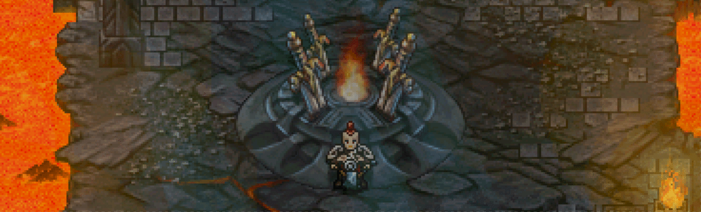
Chieftain was designed as a mobility-first class that feels great in solo play. The goal was a fast, smooth character with strong quality of life — clear tools for single target and AoE, reliable self-healing, and easy-to-read abilities. That mix is why Chieftain remains one of the most popular classes in the game.
Chieftain uses one-handed magical maces and can wield two at once. This created a clean gear path and increased demand for that weapon category, giving players a fresh reason to invest even on established accounts.


Development challenges
- Making mobility feel powerful without removing risk and decision-making
- Keeping the class beginner-friendly without making it shallow at endgame
- Dual one-handed magical maces as strong identity without locking into one build
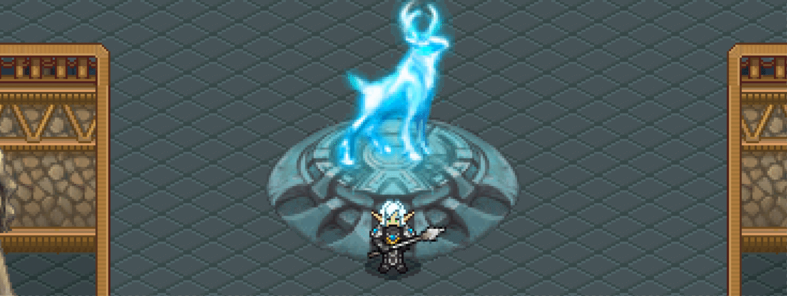
Beastmaster was designed as a solo-friendly class with a permanent combat companion. Sentinels needed a character that new players could pick without pain and still find depth in later. The companion is not timed — it stays out until it dies, and resummoning it is the failure state. This creates a forgiving baseline for solo play while still punishing mistakes and rewarding positioning.
Beastmaster uses a two-handed spear as its primary weapon. That choice created a strong gear identity and clear upgrade pressure — players invest into spear progression, sharpening, and upgrades. It also opened a fresh equipment path for established accounts.
The class can function as damage dealer or support in groups, so it stays useful beyond early game. For new players it is probably the best entry point in the game — forgiving but not brainless.

Development challenges
- Making the companion helpful without turning it into autopilot
- Companion as a real gameplay resource with meaningful failure states
- Beginner-friendly kit with real optimization depth
- Strong weapon identity without a narrow playstyle
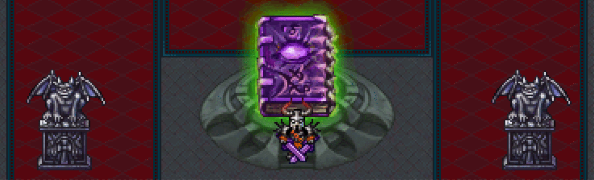
Reaper was built around one core idea: transformation as a real gameplay state. Your decisions change your entire toolkit, not just numbers. Abilities gain additional properties in form, and transformation costs a dedicated resource with a cooldown. This creates a natural rhythm: build up, choose the moment, transform, then play a stronger window.
Because the class relies on state switching and an extra resource, I designed new UI elements to keep it readable. The player must always understand their current form, resource level, and available options at a glance.
Reaper is a strong PvP class. The transformation window creates pressure and timing advantages — commit at the wrong moment and you get punished, manage your cooldowns correctly and you dominate the fight. High impact, high expression.
Development challenges
- Transformation window that feels powerful but has clear counterplay
- Readable state and resource UI at a glance
- Strong PvP power without removing punish moments
- Skills changing behavior in form without complexity overload

Competitive Guild Raids
After expanding the class roster, the next big focus was organized endgame. Competitive Guild Raids became one of the main systems for top guilds. They needed to work both as a repeatable PvE challenge and as a long-term competitive structure with seasonal momentum.

Competitive Guild Raids were designed as an endgame pillar for high-level guilds. The core goal: repeatable competitive PvE that strengthens guild identity and creates real reasons to coordinate, practice, and optimize.
Raids run as timed showdowns with leaderboards and clear progression. Difficulty scaling is part of the motivation loop — each new tier demands better execution, stronger preparation, and better teamplay. Some seasons start with 10 difficulty levels and expand to 15, giving guilds time to adapt and building momentum over the season.
The system is supported by strong UX. Players can quickly access raid functions, check rewards, track results, and compare guild standings. This makes the competitive layer visible and easy to follow, which directly increases participation.
Raid seasons create a strong sink for consumables and entry resources. The reward structure offers rare power rewards and large gold payouts that matter to top guilds, while preparation needs drive engagement in other game modes.
My role
Designed the raid system, all encounters, difficulty scaling, and reward structure. Another designer handled the raid scheduling and entry UI.
Development challenges
- Building competitive PvE that stays fun across repeated runs
- Difficulty scaling through mechanics, not just stat inflation
- Clear UX for standings, rewards, and seasonal results
- Economy impact without making the system mandatory for everyone

I owned full encounter design for all raids. The goal was fights that feel like guild content — coordination checks, role pressure, and decision points that scale with difficulty.
A core principle was staged complexity. Lower difficulties teach the fight and establish patterns. After key thresholds the raid introduces new mechanics or stronger versions of existing ones. This keeps progression meaningful and gives guilds new problems to solve instead of repeating the same execution forever.
Readability mattered a lot. In competitive content, players accept failure but only if it feels fair. Mechanics must be telegraphed, punish windows must be learnable, and success must feel earned. Anti-cheese design was also important because high-end groups always look for degenerate strategies.
Another important part was resource pressure. Raids naturally push players into preparation and consumption. Healing resources, buffs, and recovery tools become part of strategy. This supports the economy loop without forcing it through artificial restrictions. Players spend because it helps them win and climb.
Development challenges
- Mechanics that scale difficulty through skill, not only stats
- Keeping encounters readable under chaos and high player density
- Counterplay against cheese without removing creativity
- Pressure that feels intense, not exhausting
Talents and Long-term Progression
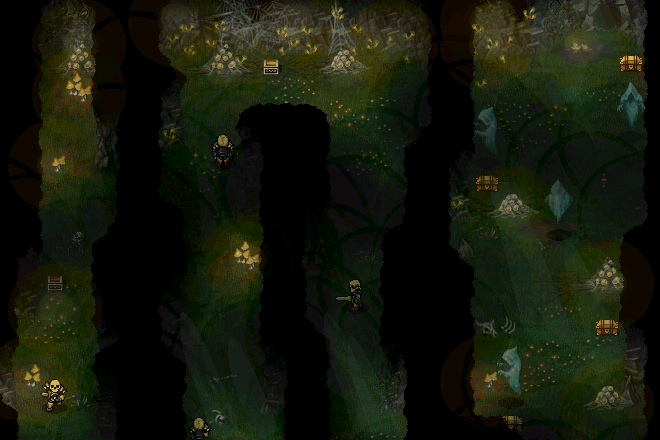
This section focuses on how the Talent system supports build diversity, daily engagement, and long-term progression. The goal was not just to add more stats, but to create another layer of character identity and to connect progression with multiple recurring activities.
When I started working on the project, the talent system felt too shallow and lacked long-term goals. I rebuilt it almost from scratch to support build diversity, daily engagement, and progression in a live economy.
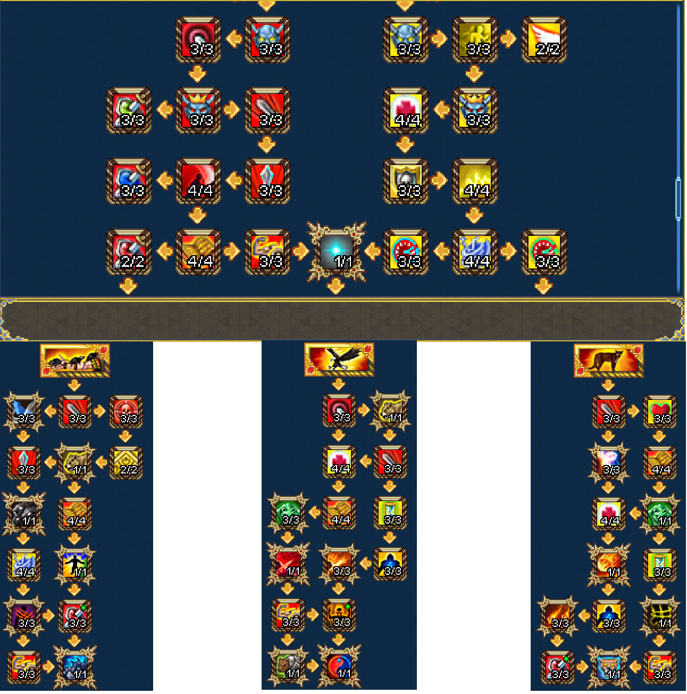
The key principle is simple: talents are tied to each character and to each class. Every class has its own tree, and on top of that there are separate guild-related talent trees that also work per character. This makes talents an actual build layer rather than a small passive bonus system.
Progression is intentionally spread across many activity types. Each source has its own cap, which avoids a single optimal grind path and pushes healthier daily variety. This also lets the system connect naturally to seasonal content, events, and battle pass.
Build switching is supported, but it is not free. This was important by design. Players should be able to experiment, but choices should still matter. Over time, build switching also became a useful resource sink for players who already maxed most other progression.
Event talent trees refresh multiple times per year. Class trees grow over longer cycles and receive regular tweaks during balance updates. This keeps the system alive and prevents the meta from becoming static.
Over time, talents increasingly moved beyond raw stat bonuses and started changing how specific skills behave in actual gameplay. This made build choices easier for players to feel in combat, instead of leaving them as passive efficiency upgrades that only mattered on paper.
Examples of talent-driven gameplay changes
- Templar — One talent made Combat Support deal magic damage around the protected ally or the Templar himself. This turned a defensive support tool into something that could also create local pressure and reward positioning.
- Chieftain — One talent added a damage-taken debuff through Thrashing, with the effect scaling based on the number of targets hit. That pushed the skill toward a stronger setup and pressure role instead of leaving it as just another AoE button.
- Beastmaster — One talent made the summoned companion create a cursed damage zone when it died or disappeared. This gave summon management more expressive value and turned the pet into both a sustained tool and a delayed area threat.
- Reaper — One talent reinforced the payoff after transformation by tying extra value to form timing and Hate management. That made the class more about choosing the right moment and converting a power window correctly, not just pressing form on cooldown.
Why this matters
- Talents started shaping moment-to-moment gameplay, not only scaling output.
- Build identity became easier to feel in real combat.
- Class progression gained more visible and memorable choices.
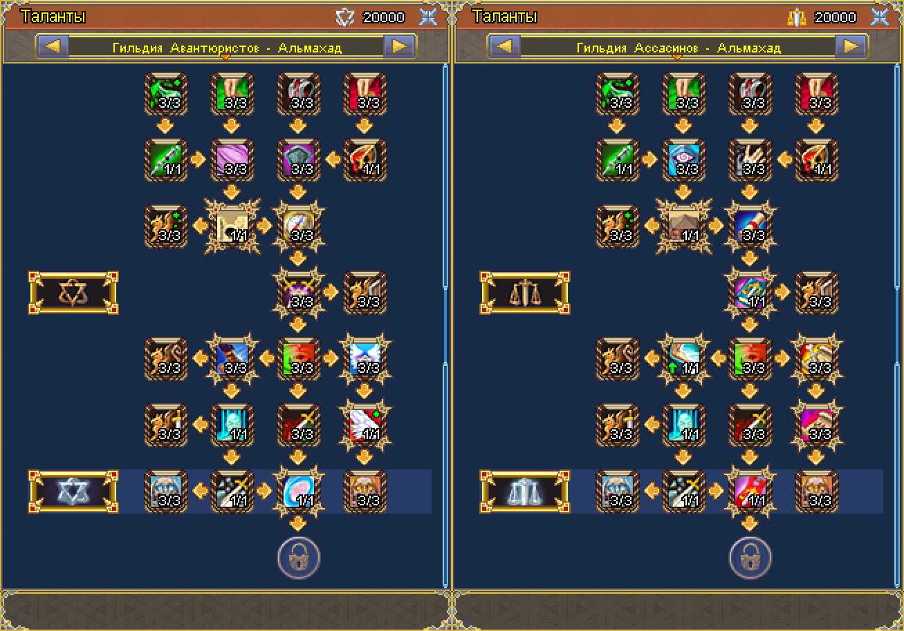
Development challenges
- Daily caps that encourage variety without feeling restrictive
- Supporting build diversity without impossible balance costs
- Build switching that is flexible but still meaningful
- Keeping the system scalable for future classes, events, and guild layers
Non-Combat Guilds
This section covers the three non-combat guilds and how they work as both daily loops and an additional build layer. These guilds are not just side activities. Each one has its own gameplay loop, but all of them are tied to reputation, guild talents, and long-term character growth.
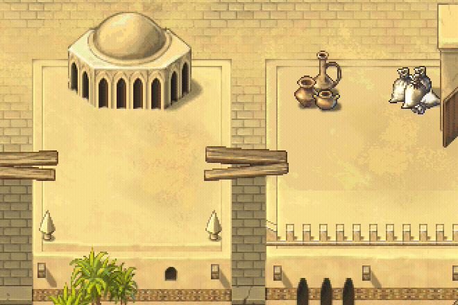
Non-Combat Guilds were designed as daily engagement systems with long-term value. Each guild has its own theme and gameplay loop, but all serve two broader goals: reliable recurring activities and extended buildcrafting through guild talent progression.
A key structural decision was exclusivity. Players can only belong to one guild at a time. Leaving costs all accumulated reputation and triggers a 24-hour lockout before joining another. This makes guild choice meaningful and increases commitment to the progression path.
Unique guild mechanics are unlocked through the talent tree and only function on the guild's territory. This gating makes progression feel earned and gives the system a stronger long-term arc. The same trees also add class-specific effects, so guild progression changes how characters are built, not only what rewards they collect.
Players can also benefit from other guild activities if another player helps open access. This creates regular cooperation moments and makes the system feel more social than a solo checklist.
Development challenges
- Making exclusive guild choice feel meaningful without creating fear of commitment
- Territorial restrictions that add identity without frustrating players
- Turning guild progression into a real build layer instead of a reputation-only track
- Creating long-term value without making the system feel like mandatory daily chores
- Social access that encourages cooperation rather than frustration
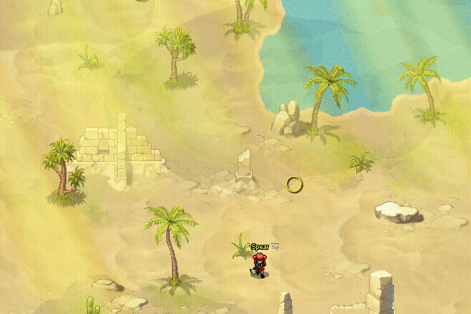
Adventurers are the PvE-focused guild path, but the core loop is more than just "run a dungeon". Players search the desert for the correct entrance among several marked locations, activate the hidden object, and then open a temporary mini-dungeon for their group. This makes the activity feel closer to exploration and discovery than to a standard queue-based instance.
That structure was important for pacing. The activity starts in the open world, creates a short search phase, and then turns into a small self-contained PvE run. It gives players a lighter and more repeatable progression loop than full-scale organized content, while still feeding long-term guild growth through reputation and talents.
Development challenges
- Making the search phase feel meaningful without becoming annoying
- Keeping repeatable mini-dungeons varied enough for daily use
- Letting the activity feel exploratory while still staying readable and efficient for regular players

Assassins are the PvP-focused guild path, built around a risk-reward loop with real player-to-player tension. After unlocking the mechanic through the guild talent tree, players gain a progress bar that appears on the guild's territory.
The bar fills by killing special PvPvE monsters that drop "Information." But progress is not safe. If another Assassin kills you, they steal a portion of your progress — the amount lost equals the amount gained by the killer. This creates direct PvP incentive: hunting other Assassins is a real progression shortcut.
When the bar reaches 100%, a personal entrance to a boss dungeon appears at a random location on the map, visible only to that player. After activation, the entrance becomes available to the player's group for a limited time. If the player dies and loses progress before entering, the entrance disappears and a new random location is assigned on the next fill.
This structure creates a much stronger tension curve than a normal daily. The progress bar makes PvP feel productive, not just adversarial. The personal entrance adds discovery. The boss dungeon provides PvE payoff. And the risk of losing progress to another Assassin keeps every session unpredictable.
Development challenges
- Creating PvP incentives where losing progress feels tense but not hopeless
- Progress transfer that rewards aggression without punishing casual players too hard
- Personal entrance randomization that feels like discovery, not busywork
- Connecting PvP pressure to a satisfying PvE payoff through the boss dungeon

Mages were designed as the most system-heavy of the three guild paths. The loop starts in the open world, where the player locates and activates a magical object, summons a bound creature, and then follows it across the desert while clearing hostile spawns that appear along the route. When the escort reaches the destination, the player activates the entrance and moves into a separate tower encounter with wave-based PvE combat.
This structure was important because it combines several kinds of play in one flow: navigation, protection, transition, and payoff. Compared to the other guilds, Mages feel less like a single task and more like a short adventure with a clear beginning, middle, and end.
The talent layer makes this guild especially strong from a portfolio point of view. The mechanic itself is unlocked through the guild tree, and the tree also includes progression that improves the escort and tower experience. That makes the system a very direct example of activity design and buildcrafting reinforcing each other.
Development challenges
- Making the escort phase readable and reliable across multiple locations
- Keeping the PvE payoff strong enough to justify the longer setup
- Designing guild talents that improve the mechanic without collapsing it into a solved routine
Catacombs
This section covers a session-based PvPvE dungeon built around loot risk, extraction timing, and group-based hostility. The goal was to create a mode where reward value comes not only from what players earn, but from whether they can successfully leave with it.
Catacombs was designed as a timed group PvPvE dungeon with extraction-style reward logic. The core idea was to create a mode where rewards are earned inside the session, but only become fully secured if the group exits successfully before the timer ends.
Inside the mode, players complete PvE objectives, fight over space, and gather virtual rewards such as currency and items. That reward state creates tension because it is not fully safe. If a player dies, part of the earned loot is dropped into the instance as a separate object that can be claimed by others. This makes death more meaningful than a simple respawn setback and turns player encounters into real risk decisions.
The extraction layer is what gives the mode its identity. There are different ways to leave: a safe evacuation path and an emergency exit with a penalty. That means the end of a run is not automatic. Players need to decide when to continue pushing for more value and when to secure what they already earned. That choice is where a large part of the tension comes from.
From a systems point of view, Catacombs also needed a clear session structure. Access happens through a lobby object, groups register in advance, and the mode starts only when participation reaches the required threshold. Hostility inside the instance is determined by group, which makes team coordination and target recognition especially important.
Another important design layer is reward conversion. Knowledge, currency, and reputation are granted directly, while item rewards are moved into Catacomb Storage after the run. This separation keeps the system readable and lets the mode support both immediate and delayed reward satisfaction.
Development challenges
- Creating real loot tension without making losses feel unfair or random
- Making PvE objectives and PvP pressure reinforce each other instead of competing for attention
- Building extraction decisions that feel meaningful, not scripted
- Structuring registration, matchmaking, and storage in a way that keeps the session understandable